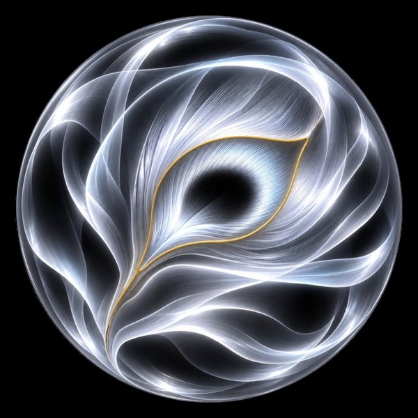
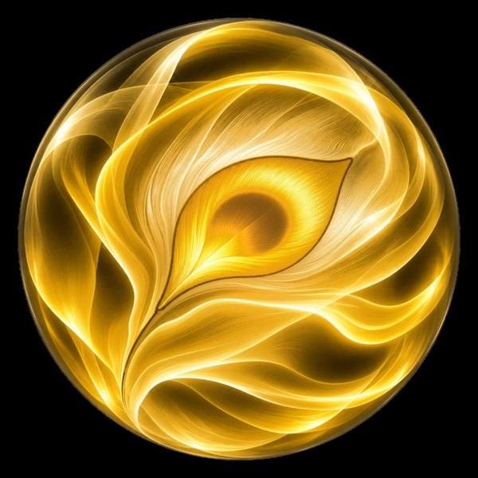
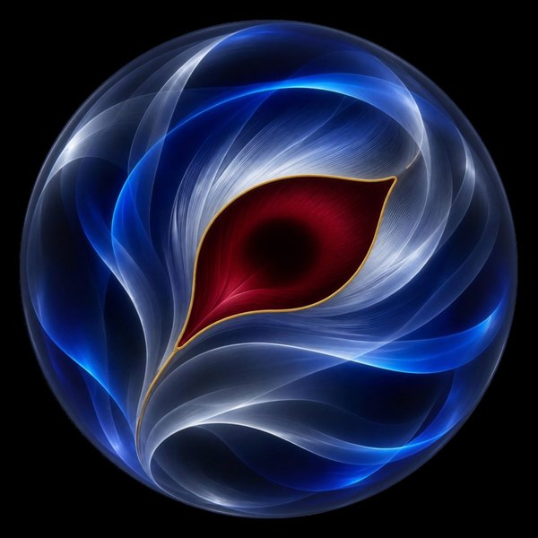

Free guide · state of the build on 20 November 2026Ghid gratuit · starea construcției la 20 noiembrie 2026
How I built ArgusCum l-am construit pe Argusthe honest blueprintschița cinstită
Argus is my own AI assistant. It lives on my Mac, wakes when I say its name, and needs my fingerprint before anything that can't be undone. I have been building it for 45 days. This is what exists today, what broke on the way, and what it still can't do.Argus e asistentul meu AI. Trăiește pe Mac-ul meu, se trezește când îi spun numele și are nevoie de amprenta mea înainte de orice lucru care nu se mai poate desface. Îl construiesc de 45 de zile. Aici e ce există azi, ce s-a stricat pe drum și ce nu poate încă.
45
days, 7 Oct to 20 Novde zile, 7 oct. – 20 nov.
1,2761.276
saved changes to the code, plus 270 for the facemodificări salvate în cod, plus 270 pentru față
17
partspiese
9
livelive
One eye for each part. Full, half or empty: live, partly, tests only. The meaning of each is below.Un ochi pentru fiecare piesă. Plin, pe jumătate sau gol: live, parțial, doar în teste. Ce înseamnă fiecare scrie mai jos.
00
The demo came firstDemo-ul a venit primul
The first saved version, on 7 October, already did this: I hold a key, I speak, I hear an answer. That is the part people film.Prima versiune salvată, pe 7 octombrie, făcea deja asta: țin o tastă, vorbesc, aud un răspuns. Asta e partea pe care o filmează lumea.
Everything since then went into the part nobody films: making it something I can leave running all day. If someone promises you an assistant in an hour, they are selling you that first version.Tot ce a urmat a intrat în partea pe care n-o filmează nimeni: să fie ceva ce pot lăsa pornit toată ziua. Dacă cineva îți promite un asistent într-o oră, îți vinde acea primă versiune.
How I work: I build with Claude Code. I decide what gets built and I test it on the real Argus. A part counts as live only when it is proven there. Passing tests is not enough.Cum lucrez: construiesc cu Claude Code. Eu hotărăsc ce se construiește și eu testez pe Argus-ul real. O piesă e «live» doar când e dovedită acolo. Să treacă testele nu ajunge.
What you won't find here: code, a one-hour promise, or monthly costs I haven't measured yet.Ce nu găsești aici: cod, promisiunea că îl faci într-o oră sau costuri lunare pe care încă nu le-am măsurat.
01
Your first version: four partsPrima ta versiune: patru piese
This is what I had at the end of the first day. It is the smallest thing I would call an assistant. No code here: what each part does, what to watch for, and what I used.Asta aveam la sfârșitul primei zile. E cel mai mic lucru pe care l-aș numi asistent. Fără cod: ce face fiecare piesă, la ce să fii atent și ce am folosit eu.
EarUrechea
Turns what you say into text.Transformă în text ce spui.
Start with a key you hold while you talk. It lets you skip a hard problem: knowing when you have stopped talking. Mine listened without a key five days later.Începe cu o tastă pe care o ții apăsată cât vorbești. Așa sari peste o problemă grea: să știe când ai terminat de vorbit. Al meu a ascultat fără tastă cinci zile mai târziu.
What I usedCe am folosit eu: Whisper, running on the MacWhisper, rulat pe Mac
BrainCreierul
Reads the text and writes the answer.Citește textul și scrie răspunsul.
Put the date and the time in every message you send it. Mine gets them every time. Keep the secret key the service gives you out of your code.Pune data și ora în fiecare mesaj pe care i-l trimiți. Al meu le primește de fiecare dată. Ține cheia secretă primită de la serviciu în afara codului.
What I usedCe am folosit eu: Claude, through its paid access for developersClaude, prin accesul lui plătit pentru programatori
VoiceVocea
Reads the answer out loud.Citește răspunsul cu voce tare.
Listen to it on your own speakers before anything else. Before my first saved version the voice crackled, until the app itself sent the sound at 48 kHz.Ascult-o pe boxele tale înainte de orice. Înainte de prima mea versiune salvată vocea pocnea, până când aplicația a trimis singură sunetul la 48 kHz.
What I usedCe am folosit eu: ElevenLabs, with a local offline voice as backupElevenLabs, cu o voce locală, fără internet, ca rezervă
MemoryMemoria
Keeps facts from one conversation to the next.Păstrează fapte de la o conversație la alta.
Decide early what it must refuse to store. Mine is coded to refuse passwords, keys and card numbers before anything is written.Hotărăște devreme ce trebuie să refuze să rețină. A mea e programată să refuze parole, chei și numere de card înainte să scrie ceva.
What I usedCe am folosit eu: SQLite, a database on the MacSQLite, o bază de date pe Mac
What I added next, in this orderCe am adăugat apoi, în ordinea asta
A yes/no card before anything risky.Un card cu da/nu înaintea oricărui lucru riscant.
A fast set of automatic checks.Un set rapid de verificări automate.
Talking without a key.Vorbit fără tastă.
Only then, the first hands: Argus doing things on the Mac, starting with music.Abia apoi, primele mâini: Argus face lucruri pe Mac, începând cu muzica.
What you need before you startDe ce ai nevoie înainte să începi
A computer with a microphone that you can leave on.Un calculator cu microfon, pe care îl poți lăsa pornit.
Paid accounts for the brain and for the voice.Conturi plătite pentru creier și pentru voce.
A way to write the code. I build with Claude Code, an AI coding tool. A part still counts as done only after I test it on the real Argus.Un mod de a scrie codul. Eu construiesc cu Claude Code, o unealtă AI de programare. O piesă e gata tot doar după ce o testez eu pe Argus-ul real.
02
What it looks likeCum arată
The orb has no human face and no mouth. It shows what Argus is doing.Orbul nu are chip de om și nici gură. El arată ce face Argus.
RestingÎn repaus
Blue, with the peacock eye at its centre.Albastru, cu ochiul de păun în mijloc.

ListeningAscultă
The whole orb turns silver.Tot orbul devine argintiu.

SpeakingVorbește
Gold, with a dark pupil.Auriu, cu pupila întunecată.

ConfirmationConfirmare
A ruby eye over the blue. It is a separate layer, shown only when Argus needs my confirmation.Un ochi rubiniu peste albastru. E un strat separat, care apare doar când Argus are nevoie de confirmarea mea.
AlarmAlarmă
All ruby, with a slit pupil.Rubiniu cu totul, cu pupila îngustă.
Captured from the Argus app. Confirmed live on 21 November. In the Mac's menu bar, a small peacock eye shows the same state.Capturi din aplicația Argus. Confirmate live pe 21 noiembrie. În bara de sus a Mac-ului, un mic ochi de păun arată aceeași stare.
03
The 17 parts, with their real statusCele 17 piese, cu starea lor reală
Live means it is proven on the real Argus: I confirmed it myself, or it runs there after every merge. Partly means some of it is proven on the real Argus, or it is switched on and not yet proven. Tests only means it passes in tests and has not been proven on the real Argus.Live înseamnă că e dovedită pe Argus-ul real: am confirmat-o eu sau rulează acolo după fiecare integrare. Parțial înseamnă că o parte e dovedită pe Argus-ul real sau că e pornită, dar încă nedovedită. Doar în teste înseamnă că trece testele și nu e încă dovedită pe Argus-ul real.
LiveLivePartlyParțialTests onlyDoar în teste
MergeIntegrare
the moment new work enters the version I actually run. The latest is number 64.momentul în care munca nouă intră în versiunea pe care o rulez. Cea mai recentă are numărul 64.
HandsMâini
things Argus can do on my Mac, like playing music or reading mail.lucruri pe care Argus le poate face pe Mac, cum ar fi să pună muzică sau să citească mailul.
CardCard
a yes/no box on the screen before a risky action.o casetă cu da/nu pe ecran, înaintea unei acțiuni riscante.
Golden listLista de aur
features I confirmed by hand, re-tested automatically on real recordings.funcții confirmate de mine, retestate automat pe înregistrări reale.
EarsUrechea
5
01
Listening without a buttonAscultare fără buton
LiveLive
Listens locally all the time, wakes on “Argus”, stops on “Stop”. Proven live on 20 Nov: “Stop” said over an answer cuts it in 0.35 to 0.67 seconds, and “Argus, don't listen” switches the microphone off completely until I click the orb or press a key. Some older cases from live use are still open.Ascultă local tot timpul, se trezește la «Argus», se oprește la «Stop». Dovedit live pe 20 nov.: «Stop» spus peste un răspuns îl taie în 0,35–0,67 secunde, iar «Argus, nu asculta» oprește complet microfonul până dau clic pe orb sau apăs o tastă. Câteva cazuri mai vechi din folosirea reală sunt încă deschise.
since 12 Octdin 12 oct. · Silero VAD · Whisper large-v3 / MLX
02
Streaming transcriptionTranscriere în flux
PartlyParțial
After the word that wakes it, my speech is turned to text by an online service as I speak. On any error it switches to the local backup. Added to the running version on 20 Nov, not yet tested live since.După cuvântul de trezire, vorbirea mea e transformată în text de un serviciu online, pe măsură ce vorbesc. La orice eroare trece pe rezerva locală. Intrată în versiunea care rulează pe 20 nov., netestată încă live de atunci.
since 18 Novdin 18 nov. · Soniox
03
A trained wake wordCuvânt de trezire antrenat
Tests onlyDoar în teste
A model trained on my voice saying “Argus”. Measured on recordings: 30 of 30 detected, 0 false alarms in 226 clips. Not yet proven live.Un model antrenat pe vocea mea spunând «Argus». Măsurat pe înregistrări: 30 din 30 prinse, 0 alarme false pe 226 de clipuri. Încă nedovedit live.
since 18 Novdin 18 nov. · ONNX
04
Echo cancellationAnularea ecoului
LiveLive
Argus must not hear itself. Apple's Voice Processing does this, after my own attempt failed. On 20 Nov it dropped out silently when the laptop lid was closed. The fix exists in tests only.Argus nu trebuie să se audă pe el însuși. Asta face Voice Processing de la Apple, după ce varianta mea a eșuat. Pe 20 nov. a căzut fără niciun semn când capacul laptopului era închis. Reparația există doar în teste.
since 16 Octdin 16 oct. · Apple Voice Processing · Swift
05
Asking backÎntrebarea înapoi
Tests onlyDoar în teste
When it probably misheard, it asks: “Did you say tomorrow?” Fixed rules, no model.Când probabil a auzit greșit, întreabă: «Ai zis mâine?» Reguli fixe, fără model.
since 23 Octdin 23 oct. · Python
Voice and brainVocea și creierul
4
06
Knowing my voiceRecunoașterea vocii mele
PartlyParțial
Scores how close a phrase is to my voice. On a weak match it asks me to repeat. Shown as active in the startup log on 20 Nov. Not yet proven live.Dă un scor: cât seamănă fraza cu vocea mea. La scor slab îmi cere să repet. Apare activă în jurnalul de pornire din 20 nov. Încă nedovedită live.
since 24 Octdin 24 oct. · ECAPA / ONNX · local
07
VoiceVocea
LiveLive
Speaks in a streamed voice. A local offline voice is the fallback.Vorbește cu o voce în flux. Rezerva e o voce locală, fără internet.
since 7 Octdin 7 oct. · ElevenLabs · Piper
08
BrainCreierul
LiveLive
Claude with a set of tools. Every message carries the date and time. A small model writes the session summaries.Claude cu un set de unelte. Fiecare mesaj poartă data și ora. Un model mic scrie rezumatele de sesiune.
since 7 Octdin 7 oct. · Claude Sonnet 5.5 · Haiku 4.5
09
MemoryMemoria
LiveLive
Facts, preferences, tasks and session summaries in one local database. Ordinary deletion is reversible, with an undo. “Forget” erases for good and asks for Touch ID. In code, it refuses to store passwords, keys, card numbers or medical data; that refusal is not yet proven live.Fapte, preferințe, sarcini și rezumate de sesiune într-o singură bază de date locală. Ștergerea obișnuită e reversibilă, cu «înapoi». «Uită» șterge definitiv și cere Touch ID. În cod, refuză să rețină parole, chei, numere de card sau date medicale; refuzul ăsta nu e încă dovedit live.
since 7 Octdin 7 oct. · SQLite
Eyes and faceOchii și fața
2
10
SightVederea
Tests onlyDoar în teste
The only sight it has is a screenshot when I ask “what's on the screen?”. No camera. Continuous vision is not started.Singura vedere e o captură de ecran când întreb «ce e pe ecran?». Fără cameră. Vederea continuă nu e începută.
since 4 Novdin 4 nov. · screen capture
11
FaceFața
LiveLive
First an eye, then a statue bust, now an orb. The orb became the default face on 14 Nov. On 21 Nov its new states were confirmed live: silver when it listens, gold when it speaks, a ruby eye when it needs my yes, all ruby on alarm.Întâi un ochi, apoi un bust de statuie, acum un orb. Orbul a devenit fața implicită pe 14 nov. Pe 21 nov. au fost confirmate live stările lui noi: argintiu când ascultă, auriu când vorbește, un ochi rubiniu când are nevoie de «da»-ul meu, rubiniu cu totul la alarmă.
since 7 Octdin 7 oct. · WebGL2 · Swift
HandsMâinile
3
12
MailMailul
PartlyParțial
Reads and sorts mail, and looks for bills from suppliers it knows. It moves and deletes only inside a test mailbox, never in my real inbox. Proven live: a test mail to my own address went out only after Touch ID, “Delete it” moved a mail to the Trash after a spoken yes, and “Back” returned it.Citește și sortează mailul și caută facturile de la furnizorii pe care îi știe. Mută și șterge doar într-o cutie de test, niciodată în Primite. Dovedit live: un mail de probă către adresa mea a plecat doar după Touch ID, «Șterge-l» a mutat un mail în Coș după un «da» rostit, iar «Înapoi» l-a adus la loc.
since 4 Novdin 4 nov. · Apple Mail
13
BillsFacturile
PartlyParțial
Spoken, proven live on 20 Nov: each bill with its amount and due date, and “I don't know the amount” when there is none. On screen, a figure shown with its source and time is not built yet.Rostit, dovedit live pe 20 nov.: fiecare factură cu sumă și scadență, iar fără sumă spune «nu știu suma». Pe ecran, cifra afișată cu sursă și oră nu e făcută încă.
since 7 Novdin 7 nov. · fixed rules, no model
14
MusicMuzica
PartlyParțial
Proven live on 20 Nov: “play something by” an artist starts the right track on Apple Music, in 4.85 seconds from pause and 6.3 seconds from stopped, and “Stop” also cancels music I had just asked for. Older open cases from 31 Oct have not been re-checked.Dovedit live pe 20 nov.: «pune ceva de la» un artist pornește piesa corectă pe Apple Music, în 4,85 secunde din pauză și 6,3 secunde din oprit, iar «Stop» anulează și muzica abia cerută. Cazurile mai vechi, din 31 oct., nu au fost reverificate.
since 27 Octdin 27 oct. · Apple Music · Chrome
The safety netPlasa de siguranță
3
15
ConfirmationsConfirmările
LiveLive
A card on screen for anything risky, yes and no matched in code against a fixed list of words, Touch ID for anything that can't be undone. A mail I delete goes to the Trash, and “Back” returns it.Un card pe ecran pentru orice e riscant, «da» și «nu» potrivite în cod pe o listă fixă de cuvinte, Touch ID pentru orice nu se mai poate desface. Un mail șters merge în Coș, iar «Înapoi» îl aduce la loc.
since 9 Octdin 9 oct. · Touch ID
16
StartupPornirea
LiveLive
Starts as an app. In code, it refuses to run a build that isn't the approved one. Every 5 minutes a watcher checks that Argus is still running and tells me if it stopped.Pornește ca aplicație. În cod, refuză să ruleze o versiune care nu e cea aprobată. La fiecare 5 minute un paznic verifică dacă Argus mai rulează și mă anunță dacă s-a oprit.
since 9 Octdin 9 oct. · launchd · Swift
17
Tests and the gateTestele și poarta
LiveLive
217 check scripts. One script is the only way into the version I run. At the last merge: 186 of 186 fast checks passed. On the golden list: 917 checks passed, 0 failed, 7 functions not covered.217 scripturi de verificare. Un singur script e singura cale spre versiunea pe care o rulez. La ultima integrare: 186 din 186 verificări rapide trecute. Pe lista de aur: 917 verificări trecute, 0 picate, 7 funcții neacoperite.
since 7 Octdin 7 oct. · bash · Python
04
The order it happened inOrdinea în care s-a întâmplat
44 of those 45 days have at least one saved change to the code.44 din cele 45 de zile au cel puțin o modificare salvată în cod.
The first saved version: hold a key, speak, get an answer. Speech turned to text on the Mac, Claude, a voice, a first memory.Prima versiune salvată: țin o tastă, vorbesc, primesc răspuns. Vorbire transformată în text pe Mac, Claude, o voce, prima memorie.
Decision cards: yes, no, undo.Cardurile de decizie: da, nu, înapoi.
Reminders, spoken confirmation, the Touch ID token. The first fast test gate.Mementouri, confirmare prin voce, jetonul cu Touch ID. Prima poartă rapidă de teste.
Talking without a button.Vorbit fără buton.
Echo cancellation through Apple's Voice Processing. Memory repaired after it lost data.Anularea ecoului prin Voice Processing de la Apple. Memoria reparată după ce a pierdut date.
The golden list, and one single path into the version I run.Lista de aur și o singură cale spre versiunea pe care o rulez.
The voiceprint. The statue bust.Amprenta vocii. Bustul de statuie.
The first hands: music.Primele mâini: muzica.
More hands: mail, bills, a panel for my businesses.Mai multe mâini: mail, facturi, un panou pentru afacerile mele.
The orb replaces the bust.Orbul înlocuiește bustul.
Speech to text as I speak, and a trained wake word. Both still unproven live.Vorbire în text pe măsură ce vorbesc și cuvânt de trezire antrenat. Amândouă încă nedovedite live.
Merge number 64. That evening, four changes proven live: microphone off on command, a faster Stop, music by artist, a yes that a whisper cannot give.Integrarea numărul 64. Seara, patru schimbări dovedite live: microfon oprit la comandă, un Stop mai rapid, muzică după artist, un «da» pe care o șoaptă nu-l poate da.
The orb gets its colours: silver, gold, ruby.Orbul își primește culorile: argintiu, auriu, rubiniu.
05
What brokeCe s-a stricat
Eight failures, with dates. Most left a rule behind.Opt eșecuri, cu date. Cele mai multe au lăsat în urmă o regulă.
It deleted its own memories.Și-a șters singur amintirile.
I said “remember that I prefer coffee with milk”. The phrase overwrote a stored fact, and a rule in the code then deleted two session summaries. The originals could not be recovered. I rebuilt them from the app log. The rule was removed: no deletion without a confirmed card.Am spus «ține minte că prefer cafeaua cu lapte». Fraza a suprascris un fapt salvat, iar o regulă din cod a șters apoi două rezumate de sesiune. Originalele nu s-au mai putut recupera. Le-am refăcut din jurnalul aplicației. Regula a fost scoasă: nicio ștergere fără un card confirmat.
A test killed 252 real processes.Un test a omorât 252 de procese reale.
A test ran the real shutdown code with its target filter broken on purpose. The stop commands reached other apps on my Mac: 88 processes and 164. Now those commands leave through one module, a test may stop only the process it started, and tests are blocked from the real data. Another incident, on 18 Nov, added one more guard.Un test a rulat codul real de oprire cu filtrul de ținte stricat intenționat. Comenzile de oprire au ajuns la alte aplicații de pe Mac: 88 de procese și 164. Acum comenzile astea pleacă printr-un singur modul, un test poate opri doar procesul pe care l-a pornit, iar testele sunt blocate de la datele reale. Un alt incident, pe 18 nov., a mai adăugat o gardă.
My own echo cancellation failed.Anularea mea de ecou a eșuat.
I tried three approaches so Argus could hear “Stop” over its own voice. None passed my thresholds. Apple's Voice Processing did. I kept my version only as a measuring tool.Am încercat trei variante ca Argus să audă «Stop» peste propria voce. Niciuna n-a trecut pragurile mele. Voice Processing de la Apple a trecut. Varianta mea a rămas doar ca instrument de măsură.
After an hour it was almost ten times slower.După o oră era de aproape zece ori mai lent.
The start of the answer went from 1.7 s to 16.2 s, then listening went silent. The measured cause: a memory cache with no limit had grown to 14.1 GB, and the speech model had been loaded twice. Fixed with a 1 GB limit and a guard against double loading.Începutul răspunsului a ajuns de la 1,7 s la 16,2 s, apoi ascultarea a amuțit. Cauza, măsurată: o memorie-tampon fără limită crescuse la 14,1 GB, iar modelul de vorbire fusese încărcat de două ori. Reparat cu o limită de 1 GB și o gardă împotriva încărcării duble.
Real phrases ended up in a test set.Fraze reale au ajuns într-un set de test.
Things the microphone picked up that were not meant for Argus had slipped into a test set. I rewrote the whole project history to take them out and replaced them with a neutral set. A rule now says a phrase that isn't addressed to Argus is not saved. Old debug recordings were outside that cleanup.Fraze prinse de microfon, care nu îi erau adresate lui Argus, intraseră într-un set de test. Am rescris tot istoricul proiectului ca să le scot și le-am înlocuit cu un set neutru. O regulă spune acum că fraza care nu i se adresează lui Argus nu se salvează. Înregistrările vechi de depanare au rămas în afara curățeniei.
Three speech setups, rejected by measurement.Trei variante de transcriere, respinse prin măsurare.
One model got 15.9% of words wrong on clean speech and 26.9–50% on short natural replies. Another setup reached 32.1%. A third was slow on long clips, so I kept a mix of two models. In a later test the slow one was more accurate, 9.5% against 11.2%, and I still kept the mix for speed. On 18 Nov I decided to move speech to an online service. That is not yet proven live.Un model greșea 15,9 % din cuvinte pe vorbire curată și 26,9–50 % pe replici scurte, naturale. Altă variantă a ajuns la 32,1 %. A treia era lentă pe clipuri lungi, așa că am păstrat un amestec de două modele. Într-un test de mai târziu cea lentă a fost mai exactă, 9,5 % față de 11,2 %, și tot amestecul l-am păstrat, pentru viteză. Pe 18 nov. am hotărât să mut vorbirea la un serviciu online. Asta nu e încă dovedită live.
The voice that won the blind test lost.Vocea care a câștigat testul orb a pierdut.
One voice model won my blind accent test. I rejected it: 340 ms slower to the first sound, and it cost more credits.Un model de voce mi-a câștigat testul orb de accent. L-am respins: cu 340 ms mai lent până la primul sunet și mai scump la credite.
The statue I threw away.Statuia pe care am aruncat-o.
A statue bust with a peacock tail, confirmed live on 27 Oct. It looked good, did almost nothing and took a lot of space. An orb replaced it.Un bust de statuie cu coadă de păun, confirmat live pe 27 oct. Arăta bine, nu făcea aproape nimic și ocupa mult loc. L-a înlocuit un orb.
06
The rules built into itRegulile puse în el
An assistant with hands needs rules. Most of these live in code, where the AI can't talk its way around them.Un asistent cu mâini are nevoie de reguli. Cele mai multe stau în cod, unde AI-ul nu le poate ocoli vorbind.
My fingerprint has the last word on anything that can't be undone. Proven live: a mail goes out only after I touch the sensor, and deleting a mail only moves it to the Trash, where “Back” returns it. Erasing a memory for good asks for Touch ID too.Amprenta mea are ultimul cuvânt la orice nu se mai poate desface. Dovedit live: un mail pleacă doar după ce ating senzorul, iar ștergerea unui mail doar îl mută în Coș, de unde «Înapoi» îl aduce la loc. Și ștergerea definitivă a unei amintiri cere Touch ID.
It cannot pay: there is no payment tool in it. It fills in forms and sends them only after I confirm. It makes no phone calls.Nu poate plăti: nu are nicio unealtă de plată. Completează formulare și le trimite doar după ce confirm eu. Nu dă telefoane.
Anything that can't be undone asks for Touch ID. A new kind of action counts as irreversible until it is marked otherwise.Tot ce nu se mai poate desface cere Touch ID. Un fel nou de acțiune e socotit ireversibil până e marcat altfel.
The risk level is computed in code, from the operations actually carried out. Words and the AI don't decide it.Treapta de risc se calculează în cod, din operațiile executate efectiv. Cuvintele și AI-ul nu o hotărăsc.
Sending a mail goes through Touch ID. Deleting a mail is a move to the Trash, confirmed by a spoken yes and undone with “Back”. Memories and reminders can be erased for good, but only with Touch ID.Trimiterea unui mail trece prin Touch ID. Ștergerea unui mail e o mutare în Coș, confirmată cu un «da» rostit și desfăcută cu «Înapoi». Amintirile și mementourile pot fi șterse definitiv, dar numai cu Touch ID.
“Yes” is matched in code against a fixed list of words. With no card on screen, a yes does nothing. A whispered yes does not delete: the card wants my recognized voice or a key, and closes after three weak tries. Proven live on 20 Nov.«Da» e potrivit în cod pe o listă fixă de cuvinte. Fără un card pe ecran, un «da» nu face nimic. Un «da» șoptit nu șterge: cardul cere vocea mea recunoscută sau o tastă și se închide după trei încercări slabe. Dovedit live pe 20 nov.
Memory is coded to refuse passwords, keys, card and bank account numbers, national ID numbers and medical data before anything is written. This one is in code and tests. I have not proven it live.Memoria e programată să refuze parole, chei, numere de card și de cont, CNP și date medicale înainte să scrie ceva. Regula asta e în cod și în teste. Nu am dovedit-o live.
The version I run changes through one script only. A second Argus is refused at startup: that part is in code and has never been tried live.Versiunea pe care o rulez se schimbă printr-un singur script. Un al doilea Argus e refuzat la pornire: partea asta e în cod și n-a fost încercată live.
Erasing or moving memories and reminders needs a single-use permission tied to that exact operation, issued only after Touch ID and valid for 120 seconds. In code since 11 Oct.Ștergerea sau mutarea amintirilor și a mementourilor cere o permisiune de unică folosință, legată de operația exactă, dată doar după Touch ID și valabilă 120 de secunde. În cod din 11 oct.
“Stop”, “Wait” or “Stop everything” halts whatever is running, in 0.35 to 0.67 seconds. Proven live.«Stop», «Stai» sau «Oprește tot» opresc orice rulează, în 0,35–0,67 secunde. Dovedit live.
Nothing leaves the Mac for the cloud without the word “Argus”: waking happens locally. On 18 Nov about 135 phrases without the word were ignored, and their sound was not saved.Nimic nu pleacă de pe Mac în cloud fără cuvântul «Argus»: trezirea se face local. Pe 18 nov., vreo 135 de fraze fără cuvânt au fost ignorate, iar sunetul lor nu a fost salvat.
“Argus, don't listen” switches the microphone off completely. It wakes only on a click or a key. Proven live on 20 Nov.«Argus, nu asculta» oprește complet microfonul. Se trezește doar la clic sau la o tastă. Dovedit live pe 20 nov.
07
What it still can't doCe nu poate încă
No camera. It cannot see the room or an object I hold up.Nu are cameră video. Nu vede încăperea și nici obiectele pe care i le arăt.
No phone version. Approving with Face ID from the phone is planned and not started.Nu are versiune pentru telefon. Aprobarea cu Face ID de pe telefon e în plan, neîncepută.
No lights, plugs or thermostat.Nu controlează lumini, prize sau termostat.
It doesn't touch my real inbox: moving and deleting work only in a test mailbox. The only mail it has sent is a test mail to my own address, after Touch ID.Nu se atinge de Primite: mutarea și ștergerea merg doar într-o cutie de test. Singurul mail trimis e unul de probă, către adresa mea, după Touch ID.
No payments and no phone calls. Neither exists in it.Fără plăți și fără telefoane. Niciuna nu există în el.
One Mac, in Romanian. The words it accepts as yes and no exist only in Romanian.Un singur Mac, în română. Cuvintele pe care le acceptă ca «da» și «nu» există doar în română.
An English reply shorter than 2 seconds can come out written as Romanian when the local backup is listening.O replică în engleză mai scurtă de 2 secunde poate ieși scrisă ca română când ascultă rezerva locală.
In loud background noise it separates my voice from the noise only with Apple's echo cancelling (Voice Processing) running.În zgomot puternic de fond îmi desparte vocea de zgomot doar cu anularea de ecou de la Apple (Voice Processing) pornită.
Streaming transcription and voice recognition are switched on and still not proven live.Transcrierea în flux și recunoașterea vocii sunt pornite și încă nedovedite live.
Text I type while Argus has been speaking for more than about 8 seconds is refused with “I can't: I'm busy now”. To be fixed.Textul pe care îl scriu cât Argus vorbește de mai mult de vreo 8 secunde e refuzat cu «Nu pot: sunt ocupat acum». De reparat.
08
What it costsCât costă
On the Mac, no costPe Mac, fără cost
The backup speech-to-text, voice detection, voice recognition and the offline voice all run on the Mac.Transcrierea de rezervă, detecția vocii, recunoașterea vocii și vocea fără internet rulează toate pe Mac.
Paid servicesServicii plătite
Claude for the brain, ElevenLabs for the voice, Soniox for speech to text. Soniox has a daily budget I set at $0.50. Claude Code, the tool I build with, and the image tool I used for the orb are paid too.Claude pentru creier, ElevenLabs pentru voce, Soniox pentru transformarea vorbirii în text. Soniox are un buget zilnic pus de mine la 0,50 $. Claude Code, unealta cu care construiesc, și unealta de imagini folosită pentru orb sunt și ele plătite.
There is no monthly figure here because I have not measured a full month.Aici nu e o cifră lunară pentru că n-am măsurat încă o lună întreagă.
09
Six lessons from these 45 daysȘase lecții din cele 45 de zile
Build the voice loop first.Construiește întâi bucla de voce.
It was the first thing I had working, and it told me I wanted the rest.A fost primul lucru care mi-a mers și mi-a arătat că vreau restul.
Build the confirmation card before the hands.Fă cardul de confirmare înaintea mâinilor.
Mine came on 9 Oct. The first hands came on 27 Oct, 18 days later. I would keep that order.Al meu a venit pe 9 oct. Primele mâini au venit pe 27 oct., 18 zile mai târziu. Aș păstra ordinea.
Decide what “it works” means.Hotărăște ce înseamnă «merge».
For me: proven on the real Argus. Passing tests means something else.La mine: dovedit pe Argus-ul real. «Trece testele» înseamnă altceva.
Never test on your real data.Nu testa niciodată pe datele tale reale.
I learned it on 16 Oct and again on 27 Oct.Am învățat-o pe 16 oct. și încă o dată pe 27 oct.
Measure, then choose.Măsoară, apoi alege.
The voice that won my blind test is not the one I kept.Vocea care mi-a câștigat testul orb nu e cea pe care am păstrat-o.
Write down what failed, with the date.Scrie ce a eșuat, cu dată.
This guide is that list.Ghidul ăsta e lista aceea.
It has taken me 45 days so far, and 9 of 17 parts are live.Până acum mi-a luat 45 de zile, iar 9 din 17 piese sunt live.
10
This is the map. The book is the road.Asta e harta. Cartea e drumul.
Construit noaptea, in English Built at Night, is the long version: every decision and every dead end, in order. It is in progress. There is no release date yet.Construit noaptea e varianta lungă: fiecare decizie și fiecare drum închis, în ordine. E în lucru. Încă nu are dată de apariție.